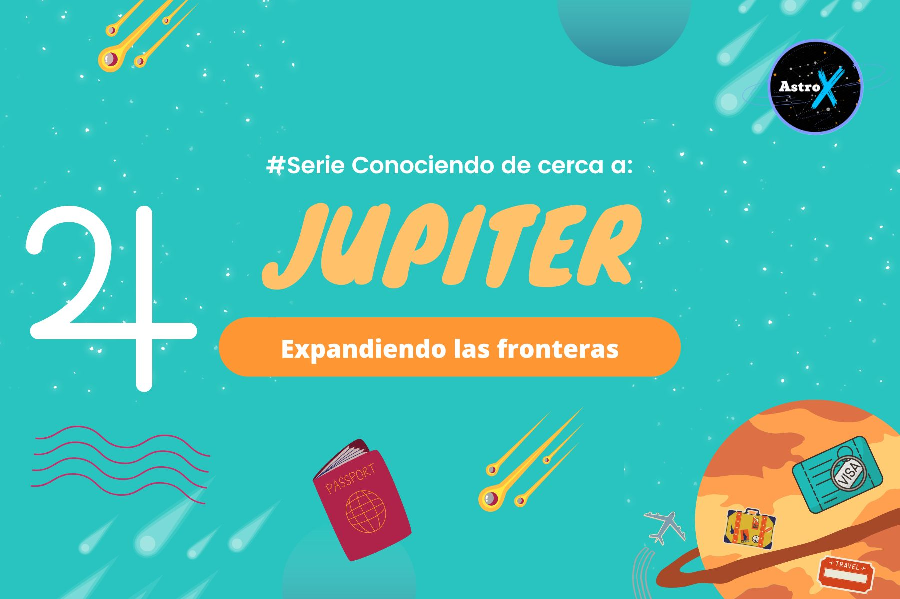

ASTRO 101: NUESTRA SECCION DEDICADA A QUE SIGAS APRENDIENDO
EL PLANETA DE LA PROFUNDIDAD Y LA TRANSFORMACION:

Plutón nos remite a esa parte tan profunda dentro nuestro, que a veces ni nosotrxs sabemos que cosas guardamos ahí (a veces a drede y otras nos olvidamos). Pero, ¿qué pasa si le damos luz a nuestras sombras mas oscuras?. Te invito a que leas éste artículo que seguro te va a gustar....Seguir leyendo...
JUPITER, EL PLANETA QUE AGRANDA TODO LO QUE TOCA:
Júpiter, la gran lupa que maximiza todo lo que toca, lo bueno y lo no tan bueno. A veces se nos va la mano en energía, acciones y traen sus consecuencias. ¿qué pasa cuando tenemos muy internalizado que cuanto mas es mejor? ¿como balanceamos ésta energía que parece tan tan buena, dentro nuestro?...Seguir leyendo...
LA LUNA Y NUESTROS MECANISMOS INCONSCIENTES:

Nuestra gran luminaria, que nos mueve los hilos desde el inconsciente. Hermosa, cambiante, movediza, oculta y visible. ¿por qué es tan importante el papel que juega en nuestra carta? ¿es verdad que nos influye tanto en nuestra vida diaria?...Seguir leyendo...